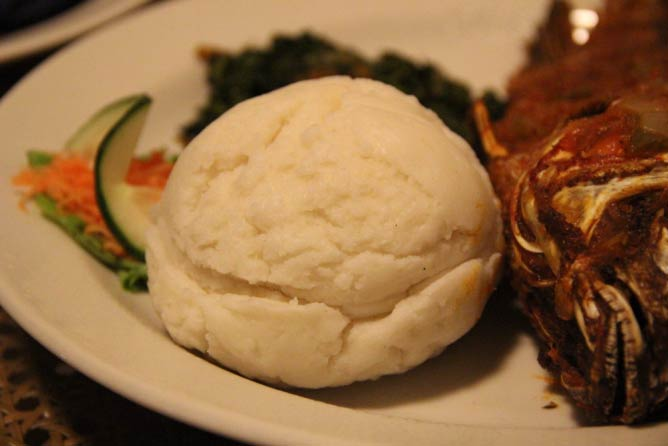
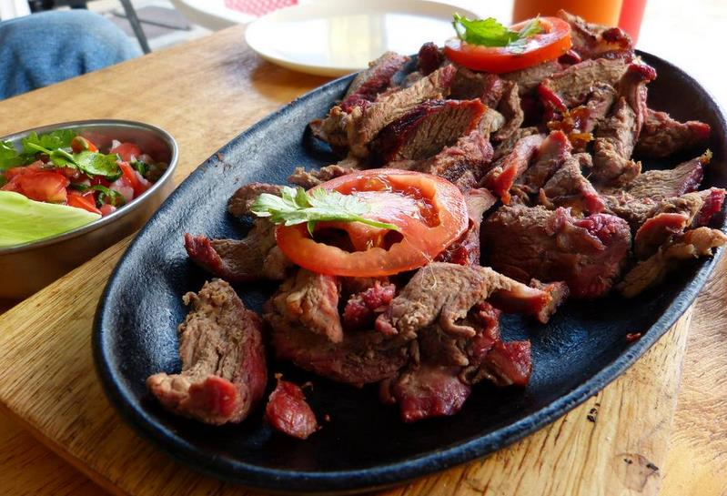
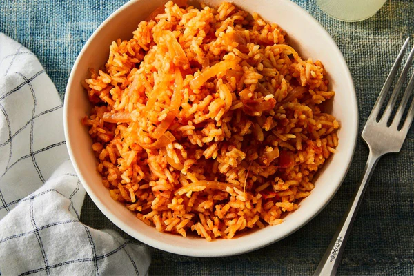
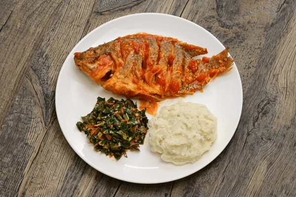
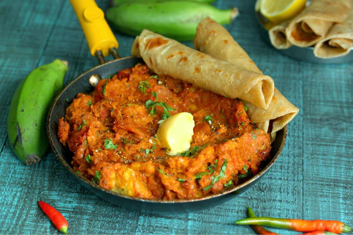

AFRICAN DISHES
Immerse yourself in the rich and diverse culinary tapestry of Africa.
Explore the vibrant flavors, aromas, and colors that tell the stories
of tradition, community, and the joy of shared meals.

Ugali, hearty maize dish, the soul of African meals

Grilled meat perfection, Kenyan barbecue delight
Kalenjin mursik, cultured fermented milk, Kenyan specialty

Jollof, West African one-pot rice, a flovorful feast

Fish fry, fresh aquatic delight, a seafood sensation

Matoke, Savory plantains, a taste of East Africa